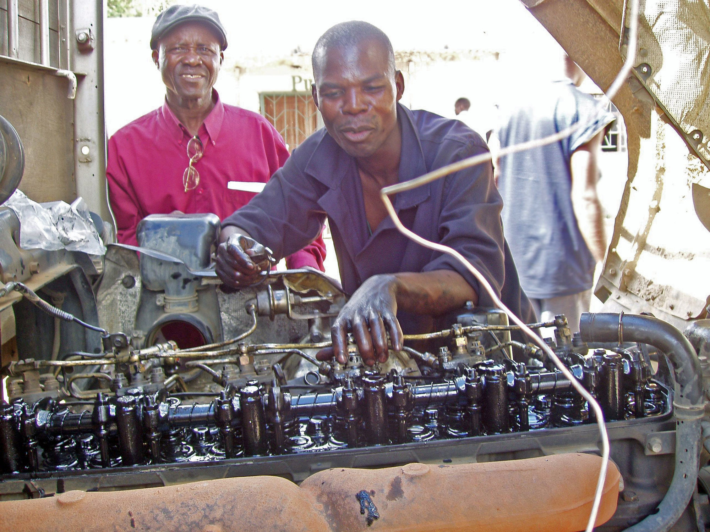

Lesson 3 · 55 minutes · CAP (A2) et bac pro (B1)
Lesson 3. What are they doing?


Version adaptée dys de la Lesson 3.
Amorce (6 min)
Pour les élèves
Look at the painting. I will point to a part of the picture. Say one sentence with the present continuous, for example: They are working near the workbenches. Use I think if you are not sure.
Activité 1. Describe the scene (12 min). Expression orale en continu.
Pour les élèves
Prepare a short oral description of the painting (A2: 5 to 6 sentences. B1: 8 to 10 sentences). You will say it to your partner, then one or two students will say it to the class. Use this plan:
- Say the painter's name and what he paints.
- Say where the people are.
- Say who you can see.
- Name the workbenches, the cardboard boxes and the large windows.
- Say what the people are doing, with the present continuous.
- Add one hypothesis, with I think or They might be.
You may use notes (key words only).
Corrigé
Exemple A2 :
This is a painting by Laurent Proux. He is a contemporary French painter of the world of work. We can see young people and adults. They are in a school workshop. There are workbenches and cardboard boxes, in front of large windows. They are working. I think they are preparing an order.
Exemple B1 :
This painting is by Laurent Proux, a contemporary French painter who paints the world of work. In the picture, young people and adults are working in a school workshop. There are workbenches and cardboard boxes in front of large windows. The people are working, and some of them might be talking, but we cannot hear them. I think a tutor is helping a young person at a workbench. They might be packing boxes, or they might be making a product. The large windows let a lot of light into the workshop.
Activité 2. Expanding your vocabulary: tools and materials (12 min).
Pour les élèves
Expanding your vocabulary
Common words, for every workplace
- a tool, a machine, materials, an order, a product, a task
- to check, to prepare, to make, to repair, to measure, to clean, to pack
- a pair of gloves, safety shoes, a locker
- Pass me the..., please. / I'm using a... / This is for...
Maintenance and industry
- a screwdriver, a spanner (or wrench), a pair of pliers, a spare part
- an engine, a machine, a cable, a switch, a leak
- to switch on, to switch off, to check, to replace, to assemble
Building
- a helmet, a drill, a level, a tape measure, a plan, a brick, a load
- a site, scaffolding
- to measure, to cut, to build, to carry, to check
Sales and customer service
- a customer, a counter, a shelf, stock, a receipt, an exchange, a refund
- to serve, to check an order, to pack, to exchange, to recommend
Catering
- a kitchen, a worktop, a tray, a knife, an order, an allergen
- to prepare, to cut, to cook, to serve, to clean, to check hygiene
Exercise. Complete with a word from your list.
- At the moment, I _______________ the engine. (maintenance: check)
- Can you pass me the _______________, please? (building: tape measure or drill)
- The _______________ is waiting at the counter. (sales: customer)
- I'm _______________ the order for table five. (catering: preparing or serving)
- For every workplace: This _______________ is for the delivery. Where can I put it? (cardboard box or order)
Corrigé
- am checking (or I'm checking)
- tape measure / drill / level (tout outil de la liste bâtiment est acceptable si la phrase reste juste)
- customer
- preparing / serving
- cardboard box / order
Puis demander à chaque élève d'écrire deux phrases vraies sur son métier, au present continuous, avec un outil de sa liste. Exemple : At the moment, I am replacing a spare part with a screwdriver.
Activité 3. Write a caption (12 min). Expression écrite.
Pour les élèves
Write a museum caption in English for this painting by Laurent Proux. Do not invent a title.
A2. Write 50 to 60 words. Use this frame: This painting is by Laurent Proux, a contemporary French painter. In the painting, we can see... They are... There are... I think...
B1. Write 80 to 100 words. First describe what is in the painting. Then add a sentence about why this scene is interesting for students in a lycée professionnel. End with one hypothesis.
When you finish, exchange your caption with your partner. Underline one sentence you like. Correct one language detail if you can.
Corrigé
Exemple A2 (environ 55 mots) :
This painting is by Laurent Proux, a contemporary French painter of the world of work. In the painting, we can see young people and adults in a school workshop. They are working. There are workbenches and cardboard boxes in front of large windows. I think they are preparing an order, but we cannot be sure.
Exemple B1 (environ 95 mots) :
This painting is by Laurent Proux, a contemporary French painter of the world of work. It shows young people and adults working in a school workshop. There are workbenches and cardboard boxes in front of large windows. The painting does not tell us what they are making, and it does not give us their words. For students in a lycée professionnel, the scene is close to everyday life: we also work with others, in a workshop, with a tutor. I think a young person is asking an adult for help at a workbench.
Activité 4. A short oral caption (8 min). Expression orale en continu.
Pour les élèves
Using your written caption, say it aloud to your partner, without reading every word. Look at the painting, then at your partner. Your partner listens and asks one question, for example: What do you think they are making? Then change roles.
Trace écrite (incluse dans les 5 minutes finales, avec le travail à la maison).
Pour les élèves. Trace pour le cahier
Present continuous and present simple
- Every day, I work in the workshop. (present simple: a habit, a fact)
- At the moment, I am checking the order. (present continuous: now)
- In the painting, they are working in front of the large windows.
- What is she doing? She is measuring a piece.
- They are not talking to us. We can only imagine their words.
A useful frame
- This is a... / I'm using a... to... / Can you pass me the..., please?
Travail à la maison (dans les 5 minutes finales : 5 min = trace + consigne).
Pour les élèves
Homework, Lesson 3
- Put the verb in the present simple or the present continuous. a. Every morning, Léa _______________ at eight. (arrive) b. Look! She _______________ a cardboard box. (open) c. Karim _______________ in this workshop every day. (work) d. At the moment, the tutor _______________ the task. (explain) e. In the painting, the people _______________ in front of large windows. (work)
- Copy and improve your museum caption. Check facts and hypotheses.
- Learn ten words from Expanding your vocabulary: the common list, plus five words from your trade.
Corrigé
- a. arrives b. is opening c. works d. is explaining e. are working
- (Légende personnelle, à corriger selon le modèle de l'activité 3 : faits visibles exacts, hypothèse signalée, pas de titre inventé.)